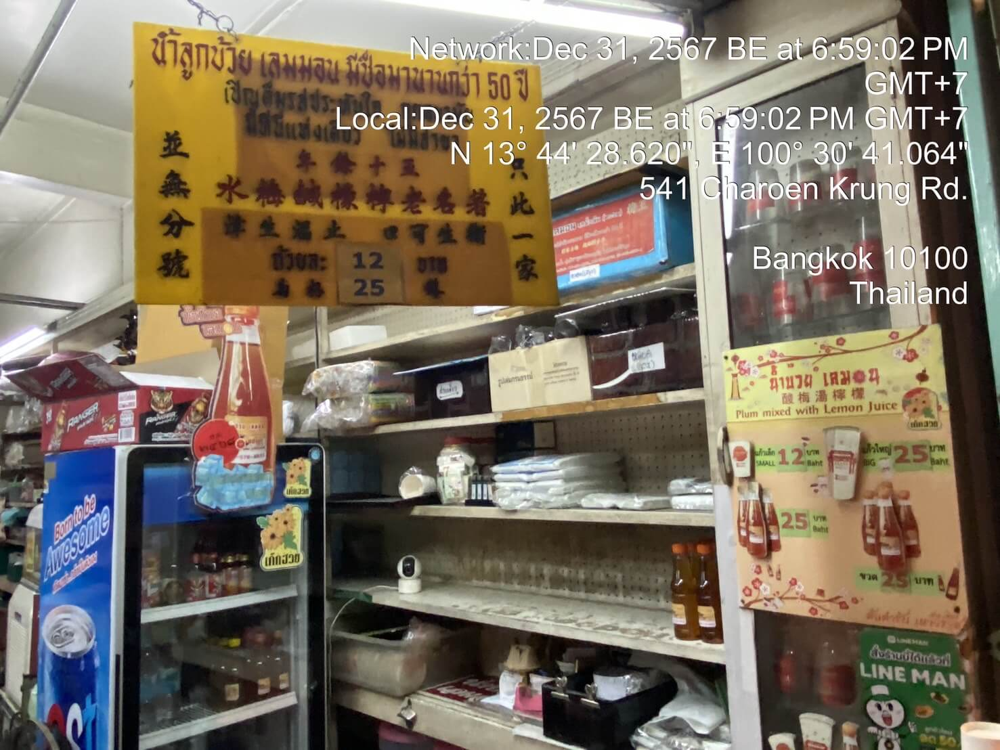
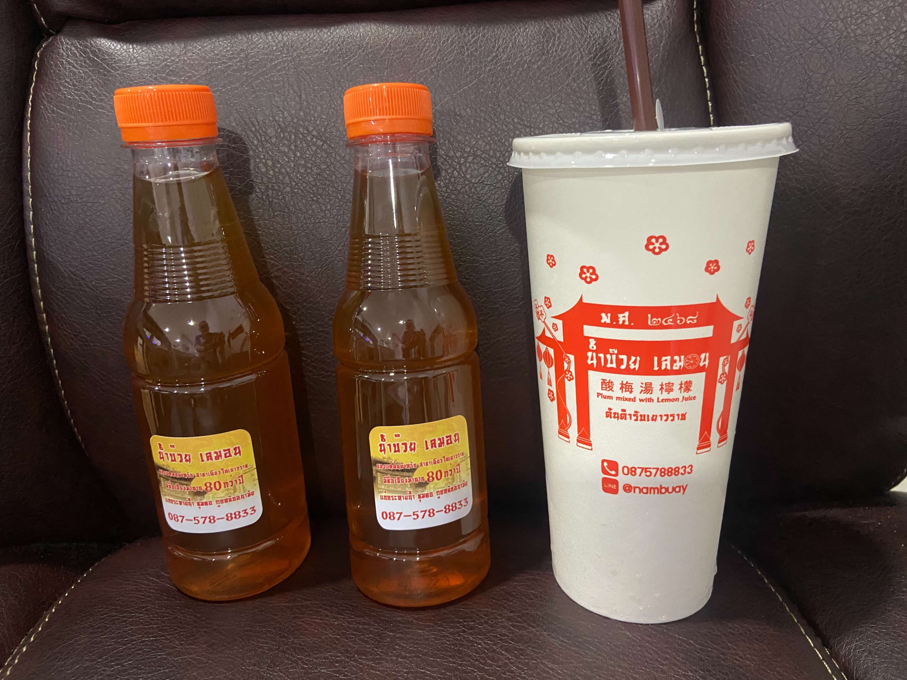

A Drink Stop in Chinatown: Plum Lemon Delights
Tucked away in the bustling streets of Chinatown, this humble drink shop is a gem waiting to be discovered. The aroma of plum and lemon wafts through the air as you approach, and the cheerful red decor beckons you inside. Their signature drink, "Plum Mixed with Lemon Juice," is a perfect blend of tangy and sweet—a refreshing escape from the city's heat.
I remember seeing a sign over 40 years ago, back when I was a kid, stating that this shop was already more than 50 years old. That means it must be around 90 years old now!



The shop feels like a step back in time, with vintage signs and a warm, nostalgic charm. Locals flock here not just for the drinks but also for a taste of tradition and a moment of serenity amidst the vibrant chaos of Yaowarat. Whether you opt for a bottled drink or a chilled slush, this tiny shop promises a memorable sip of Chinatown's heritage.